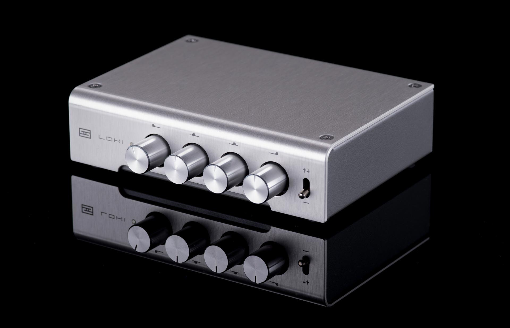

Loki Mini
Released: 2017/09/26
Category: EQ
Yes, tone control. As in, equalizer. And yeah, we know that tone controls have kinda fallen off the planet for the last few decades. But now we think it’s time for them to come back—in a new, super-high-fidelity, low noise, single-discrete-gain-stage and LC filtering kind of way. (In English, that means this is an exceptionally quiet, transparent, great-sounding device.)
Ideal for the Imperfect System
And by “imperfect system,” we mean “every system on the face of the planet.” Admit it. Are your speakers perfect? Are your headphones perfect? Are your recordings perfect? If you’re honest, the answer is “no.” Some speakers and headphones are a bit bright or a bit dark. Some recordings aren’t paragons of tonal purity. Loki lets you adjust for these imperfections.
Tune to Your Desires
Let’s face it. Not everyone wants a bright, analytical system. Not everyone wants crazy pounding bass. We’re all individuals, and we all have preferences. With Loki, you can go beyond tuning out imperfections—you can tune the system to the way you want it to sound.
Not Your Father’s EQ
Best of all, Loki allows you this level of control, while retaining transparency. Instead of a stack of noisy op-amps attached to open-frame, dust-collecting sliders (like EQs you may have used in the past), Loki uses a single, discrete, current-feedback gain stage, coupled to passive LC filters for 3 bands, plus a gyrator for the bass. It also uses sealed Alps potentiometers with rational adjustment ranges to allow for fine control. Coupled with a 100% passive bypass setting, Loki offers the transparency and flexibility you need.